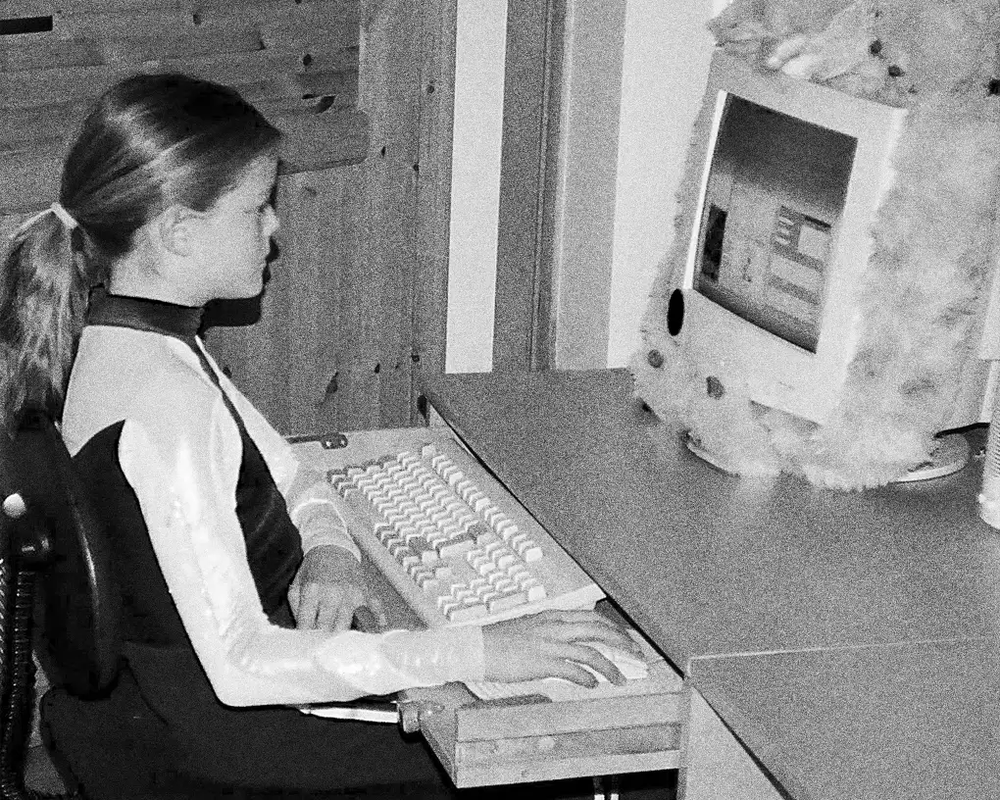

Hello! I'm Lene. A frontend student, building tiny things toward bigger ones.
Scroll down


Ever since I was a little girl, I knew I wanted to be on the computer a lot.
Scroll down

Ever since I was a little girl, I knew I wanted to be on the computer a lot.